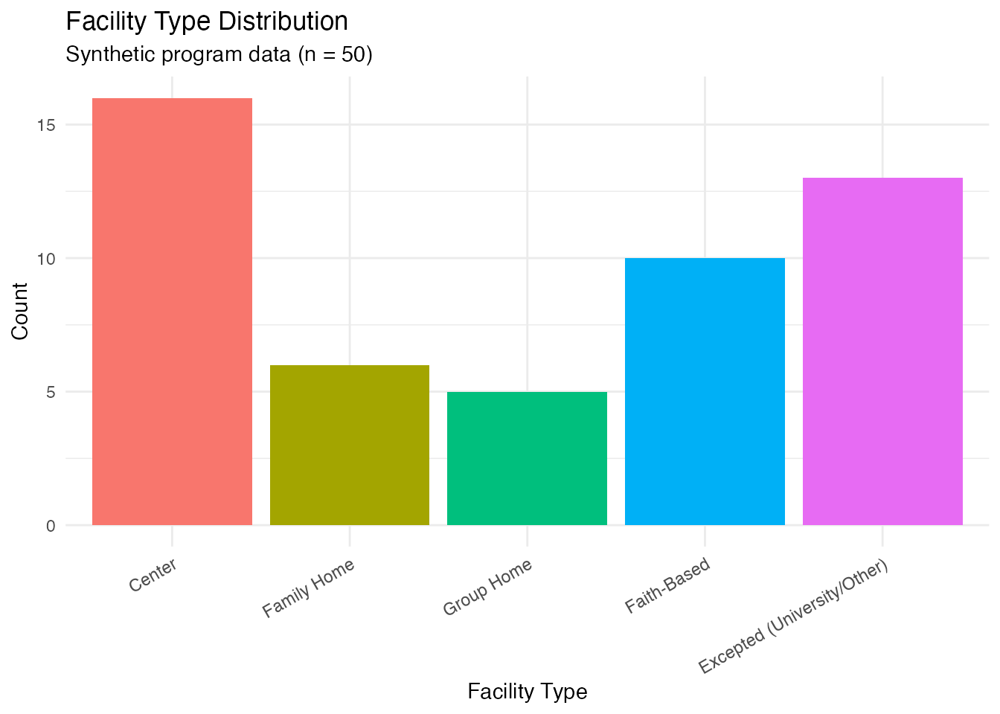
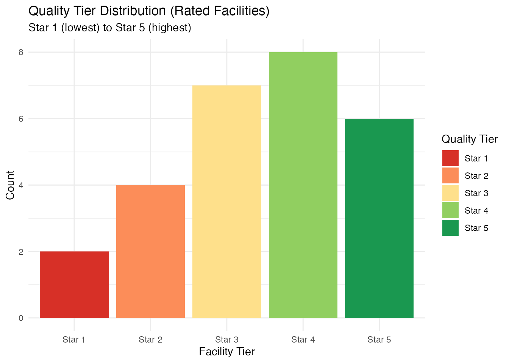

Overview
ALccdfDB is a modular R package for processing, cleaning, validating, and managing Alabama CCDF (Child Care and Development Fund) administrative data received from the Alabama Department of Human Resources (DHR).
The package ingests heterogeneous Excel reports covering licensed childcare centers, family and group homes, faith-based exempt facilities, license-excepted programs, subsidy enrollment and client records, Alabama Pathways staff registry data, and Melissa.com geocoding results. Each data source follows its own format, and ALccdfDB provides data-driven column mappings that adapt automatically.
The complete processing pipeline transforms raw files into analysis-ready, linked, and geocoded panel datasets:
DHR Excel Files Processing Pipeline Output
------------------- ---------------------------- ------------------
Licensed Centers --> Read --> Clean --> Validate
Family/Group Homes --> (S3 obj) (S3 obj) (S3 obj)
Faith-Based Exempt --> |
License Excepted --> Append Types Analysis-ready
| tibbles
Subsidy (Enrolled) --> Deduplicate
Subsidy (Clients) --> | CSV / Excel /
Melissa --> Linkage Stata / Parquet
Staff Pathways --> (Geocode) (Cross-module)
|
Melissa Geocoding --> Export / Database
(DuckDB snapshots)Package Modules
| Module | Purpose |
|---|---|
| Program | Licensed childcare facility data (4 types: Center, Family Home, Group Home, Faith-Based/Excepted), cleaning, tier recoding, derived variables |
| Subsidy | Enrolled children and client household records, PII separation |
| Staff | Alabama Pathways staff registry, career lattice levels |
| Melissa | Melissa.com geocoding integration (lat/lng, census tract, FIPS) |
| Linkage | Cross-module joins (programs x enrolled, clients, staff) |
| Database | DuckDB persistent storage with snapshot management |
| Utils | Shared helpers, export functions (CSV, Excel, Stata, Parquet, RDS) |
Installation
# install.packages("remotes")
remotes::install_github("joonho112/ALccdfDB")Quick Start with Synthetic Data
ALccdfDB includes synthetic data generators that produce realistic datasets without requiring access to confidential DHR files. All generators share the same facility pool when called with the same seed, enabling cross-module linkage.
# Generate synthetic data for all three primary modules
programs <- alccdf_synthetic_programs(n = 50, seed = 42)
subsidy <- alccdf_synthetic_subsidy(n_enrolled = 80, n_clients = 40, seed = 42)
staff <- alccdf_synthetic_staff(n = 60, seed = 42)The S3 print method shows a compact summary of each object:
programs
#>
#> ── ALccdfDB Program Data (Clean) ──
#>
#> ℹ Type: synthetic
#> ℹ Snapshot: 2026-02-15
#> ℹ Dimensions: 50 rows x 51 cols
#> ℹ Raw rows: 50
#> ℹ Columns: facility_id, facility_name, facility_type_raw, facility_type, facility_tier, county, region, facility_address, facility_address2, provider_id, license_number, day_start, day_end, night_start, night_end, day_capacity, night_capacity, has_day_capacity, has_night_capacity, total_capacity, night_to_day_ratio, day_age_range, day_age_min, day_age_max, day_age_range_num, day_age_infants_toddlers, day_age_preschool, day_age_school_aged, night_age_range, night_age_min, night_age_max, day_operating_hours, night_operating_hours, operation_type, expiration_date, current_date, days_till_expire, facility_tier_original, was_originally_rated, is_high_quality, tier_weight_linear, tier_weight_binary, tier_weight_exp, capacity_qa_linear, capacity_qa_binary, capacity_qa_exp, capacity_flag, snapshot_date, phone_number, director_name, consultantExtract the underlying data tibble with alccdf_data()
and inspect key columns:
head(alccdf_data(programs)[, c("facility_id", "facility_name",
"facility_type", "facility_tier",
"county", "day_capacity")])
#> # A tibble: 6 × 6
#> facility_id facility_name facility_type facility_tier county day_capacity
#> <chr> <chr> <fct> <ord> <fct> <int>
#> 1 FX001 JSU Child Learnin… Excepted (Un… NA St. C… 39
#> 2 FX002 Gadsden State Chi… Excepted (Un… NA Morgan 42
#> 3 FC001 Jubilee Child Car… Center Star 3 Jeffe… 119
#> 4 FG001 Lakeside Group Ho… Group Home Star 4 Calho… 7
#> 5 FE001 New Hope Church D… Faith-Based NA DeKalb 55
#> 6 FE002 Emmanuel Lutheran… Faith-Based NA Elmore 40Facility Type Distribution
Alabama CCDF data covers five facility types. The synthetic data mirrors the approximate real-world distribution across centers, family homes, group homes, faith-based, and excepted facilities.
library(ggplot2)
#> Warning: package 'ggplot2' was built under R version 4.5.2
prog_df <- alccdf_data(programs)
ggplot(prog_df, aes(x = facility_type, fill = facility_type)) +
geom_bar() +
labs(
title = "Facility Type Distribution",
subtitle = "Synthetic program data (n = 50)",
x = "Facility Type",
y = "Count"
) +
theme_minimal() +
theme(
axis.text.x = element_text(angle = 30, hjust = 1),
legend.position = "none"
)
Quality Ratings
Licensed facilities in Alabama receive a quality tier rating from
Star 1 (lowest) to Star 5 (highest). Faith-Based and Excepted facilities
are not rated and have NA tiers.
table(prog_df$facility_tier, useNA = "ifany")
#>
#> Star 1 Star 2 Star 3 Star 4 Star 5 <NA>
#> 2 4 7 8 6 23
# Filter to rated facilities only
rated_df <- prog_df[!is.na(prog_df$facility_tier), ]
ggplot(rated_df, aes(x = facility_tier, fill = facility_tier)) +
geom_bar() +
scale_fill_manual(
values = c("Star 1" = "#d73027", "Star 2" = "#fc8d59",
"Star 3" = "#fee08b", "Star 4" = "#91cf60",
"Star 5" = "#1a9850"),
name = "Quality Tier"
) +
labs(
title = "Quality Tier Distribution (Rated Facilities)",
subtitle = "Star 1 (lowest) to Star 5 (highest)",
x = "Facility Tier",
y = "Count"
) +
theme_minimal()
Summary Statistics
The program_summary_stats() function computes a
comprehensive set of summary tables from any program-module S3
object:
stats <- program_summary_stats(programs, verbose = FALSE)Overview of the dataset:
stats$overview
#> # A tibble: 1 × 5
#> n_facilities n_columns n_types n_counties snapshot_date
#> <int> <int> <int> <int> <chr>
#> 1 50 51 5 23 2026-02-15Capacity distribution across day and night operations:
stats$capacity
#> # A tibble: 2 × 10
#> variable n_valid n_na mean median sd min max q25 q75
#> <chr> <int> <int> <dbl> <dbl> <dbl> <int> <int> <dbl> <dbl>
#> 1 day_capacity 50 0 60.4 53.5 51.1 4 193 20.5 76.2
#> 2 night_capacity 50 0 0.6 0 3 0 19 0 0Codebook System
ALccdfDB uses internally defined factor levels for categorical variables, ensuring consistency across cleaning, validation, and export. Use the codebook functions to inspect the canonical levels:
alccdf_facility_type_levels()
#> [1] "Center" "Family Home"
#> [3] "Group Home" "Faith-Based"
#> [5] "Excepted (University/Other)"
alccdf_facility_tier_levels()
#> [1] "Star 1" "Star 2" "Star 3" "Star 4" "Star 5"Real Data Processing Pipeline
With actual DHR Excel files, the processing workflow follows a structured configure-read-clean-validate-append-deduplicate pipeline:
# 1. Configure paths and snapshot date
cfg <- program_config(
snapshot_date = "2025-06-11",
center_path = "data/Centers_06_11_25.xlsx",
home_path = "data/FamilyGroupHomes_06_11_25.xlsx",
exempt_path = "data/FaithBasedExempt_06_11_25.xlsx",
excepted_path = "data/LicenseExcepted_06_11_25.xlsx"
)
# 2. Read each type (auto-detects format version and column mapping)
raw_center <- program_read(cfg$paths$center, type = "center",
snapshot_date = cfg$snapshot_date)
raw_home <- program_read(cfg$paths$home, type = "family_home",
snapshot_date = cfg$snapshot_date)
raw_exempt <- program_read(cfg$paths$exempt, type = "exempt",
snapshot_date = cfg$snapshot_date)
raw_excepted <- program_read(cfg$paths$excepted, type = "excepted",
snapshot_date = cfg$snapshot_date)
# 3. Clean (standardises addresses, dates, capacity, tiers, factors)
clean_center <- program_clean(raw_center)
clean_home <- program_clean(raw_home)
clean_exempt <- program_clean(raw_exempt)
clean_excepted <- program_clean(raw_excepted)
# 4. Validate each type
program_validate(clean_center)
program_validate(clean_home)
# 5. Append all types into a unified dataset
unified <- program_append_types(clean_center, clean_home,
clean_exempt, clean_excepted)
# 6. Deduplicate by facility_id
deduped <- program_deduplicate(unified)Validation
Every module includes a validation step that runs quality checks against the cleaned data. The program validator performs 10 checks covering required columns, duplicates, capacity, county names, dates, operating hours, age ranges, addresses, tiers, and snapshot dates.
validation <- program_validate(programs, verbose = FALSE)
validation
#>
#> ── ALccdfDB Validation Report: program ──
#>
#> ℹ Status: ✔ PASSED
#> ℹ Snapshot: 2026-02-15
#> ℹ Checks: 10 total
#> ! Warnings: 1
#> ℹ Info: 1
#> ✔ [PASS] All required columns present
#> ✔ [PASS] No duplicate facility IDs
#> ⚠ [WARN] Non-positive capacity values found (48 issues)
#> ✔ [PASS] County: 23 unique values (factor)
#> ✔ [PASS] Expiration dates within expected range
#> ✔ [PASS] Operating hours within 0-24 range
#> ℹ [INFO] Age range columns not present (skipped)
#> ✔ [PASS] All facility addresses present
#> ✔ [PASS] Facility tiers valid (Star 1-5 or NA)
#> ✔ [PASS] Snapshot date present on all rowsNext Steps
This vignette covered the basics of generating synthetic data, inspecting program records, and understanding the processing pipeline. For more advanced workflows, see:
-
vignette("full-pipeline")for the complete multi-source processing workflow including subsidy, staff, and Melissa geocoding modules -
vignette("data-linkage")for cross-module linkage (programs x enrolled, clients, staff) and DuckDB database integration